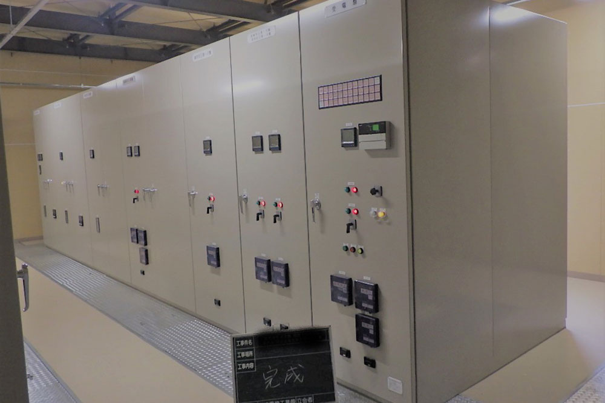
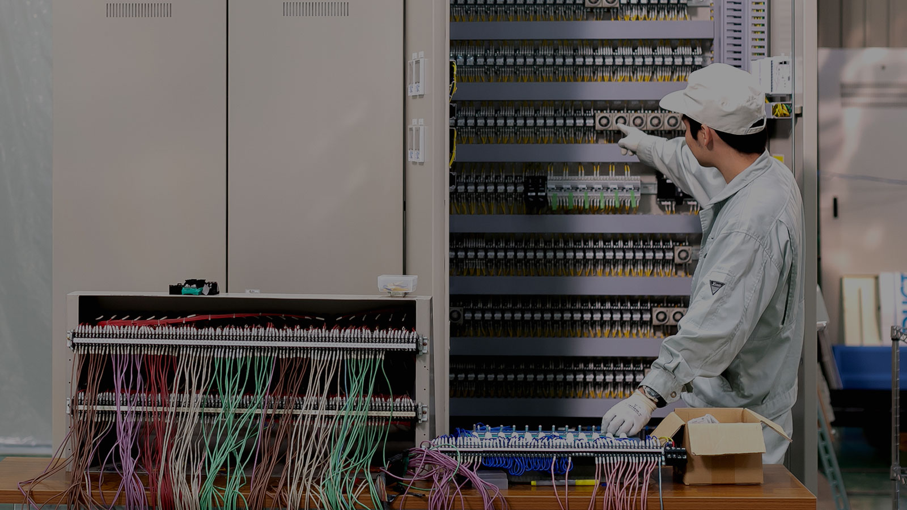
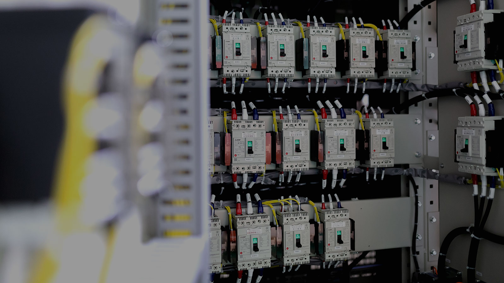
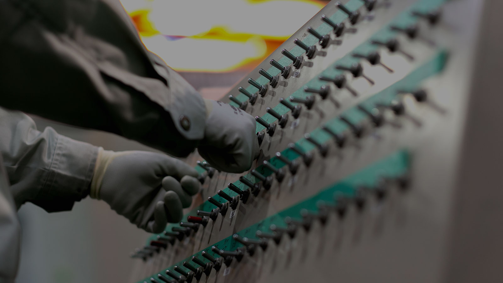
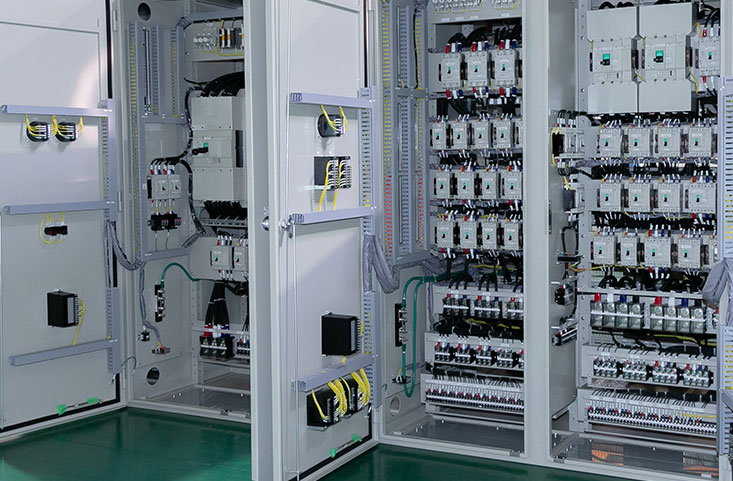

PUBLIC / INFRASTRUCTURE
上下水道ポンプ場の電気設備更新
24時間止められない自治体インフラの制御盤一式を設計・製作・施工。無停止での切替を実現。
普段は目に触れない場所で、暮らしと産業を支える。社会インフラの“見えない貢献”を、導入事例でご紹介します。

24時間止められない自治体インフラの制御盤一式を設計・製作・施工。無停止での切替を実現。

工場設備の自動化・省人化を実現する制御盤を導入し、生産性を向上。



※取引先の具体名・事例写真は、守秘・許諾を確認のうえ確定情報を掲載します。現サイトの写真も活用予定。